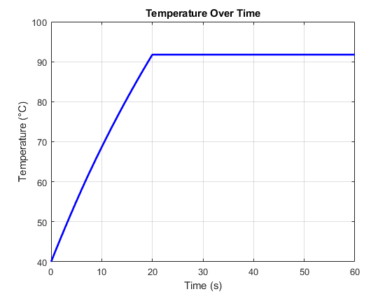
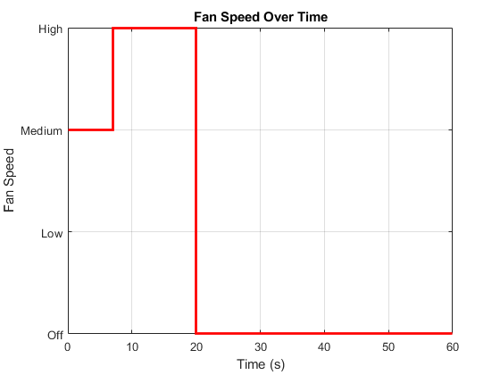
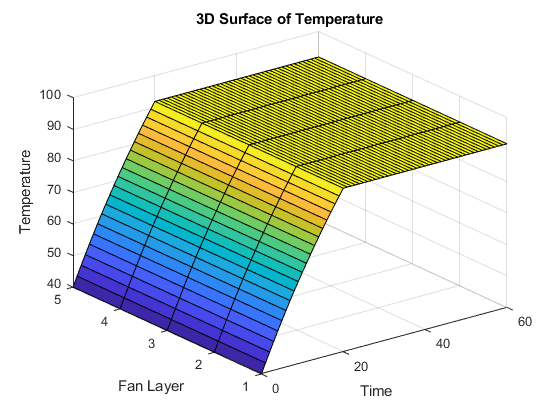

Smart Fan Cooling System - Publish Report
This script runs the smart fan simulation and displays key outputs.
Contents
Parameters
params = struct(); params.Ta = 25; % Ambient temperature (°C) params.L = 70; % Load (%) params.Tmax = 90; % Maximum temperature threshold (°C) params.T0 = 40; % Initial machine temperature (°C) params.sim_time = 60; % Simulation duration in seconds
Initialize System
state = initialize_system(params);
Run Simulation
state = simulate_smart_fan(state, params);
System shutdown at 20.0 sec due to high temp (91.77 °C) Max temperature reached: 91.77 °C Fan ran in MEDIUM mode for 7 seconds. Data written to temperature_log.xlsx
Plot Temperature
figure; plot(state.time, state.T, 'b', 'LineWidth', 2); xlabel('Time (s)'); ylabel('Temperature (°C)'); title('Temperature Over Time'); grid on;
Plot Fan Speed
figure; stairs(state.time, fan_speed_to_numeric(state.FanSpeed), 'r', 'LineWidth', 2); yticks(0:3); yticklabels({'Off', 'Low', 'Medium', 'High'}); xlabel('Time (s)'); ylabel('Fan Speed'); title('Fan Speed Over Time'); grid on;
3D Surface Plot
figure; [X, Y] = meshgrid(state.time, 1:5); Z = repmat(state.T, 5, 1); surf(X, Y, Z); xlabel('Time'); ylabel('Fan Layer'); zlabel('Temperature'); title('3D Surface of Temperature'); grid on;
Export to Excel
T_data = [state.time' state.T']; xlswrite('temperature_log.xlsx', T_data); disp('Data written to temperature_log.xlsx');
Data written to temperature_log.xlsx
Output Summary
disp(['Max Temp: ', num2str(max(state.T)), ' °C']); disp(['Simulation Length: ', num2str(length(state.time)), ' steps']); disp(['Temperature Array Size: ', mat2str(size(state.T))]); disp('Simulation completed successfully.');
Max Temp: 91.7743 °C Simulation Length: 61 steps Temperature Array Size: [1 61] Simulation completed successfully.